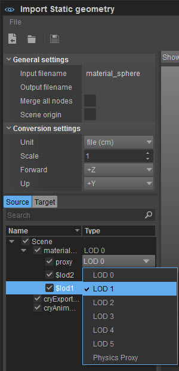
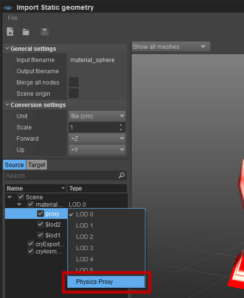
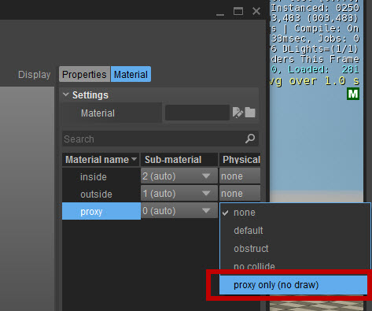
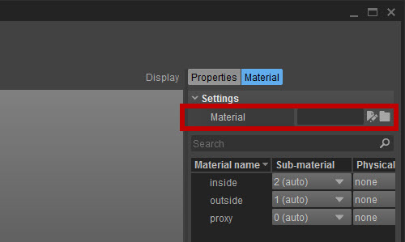

Обзор
На этой странице мы рассмотрим процесс использования импортера FBX внутри CRYENGINE для импорта ресурсов на уровень в формате FBX. Этот конвейер эффективно устраняет разрыв между другими инструментами DCC, помимо 3DS Max и Maya, позволяя пользователям продолжать использовать предпочитаемое ими 3D-приложение для создания контента, пригодного для использования в CRYENGINE.
Обратите внимание, что импортер FBX поддерживает другие форматы, например DXF, DAE, OBJ и 3DS, однако FBX является предпочтительным форматом обмена, и мы сосредоточимся только на нем.
Помимо того, что инструмент импорта FBX является альтернативой экспорту файлов, он также предлагает возможность создавать несколько файлов CGF из одного и того же файла FBX с помощью функции исключения/включения узлов. Другими словами, вы можете использовать один и тот же файл FBX для экспорта нескольких ресурсов.
Полезная информация
Обратите внимание, что импортер FBX не устраняет необходимость правильной настройки ресурсов:
- Повороты должны быть установлены правильно.
- Геометрия требует групп сглаживания; в противном случае движок назначит их вам, что, скорее всего, приведет к нежелательным результатам.
- Правильное сопоставление UV необходимо для любого готового к игре ресурса.
- Единицы измерения в предпочитаемом вами инструменте DCC должны быть настроены на использование метрической системы, чтобы обеспечить согласованность с единицами измерения CRYENGINE.
Настройка объекта – инструмент DCC
Прежде чем импортировать ваш ресурс с помощью инструмента импорта FBX, необходимо выполнить несколько шагов независимо от того, какое 3D-приложение вы используете. За исключением нескольких очень специфических сценариев, большинство ресурсов должны иметь уровни детализации, прокси-сетки (также известные как сетки столкновений), а также правильную настройку иерархии между этими различными элементами.
Уровень детализации (LOD)
Для LOD-ов имя актива определяет порядок, в котором они заменяются движком в зависимости от расстояния. Родительской сетке не требуется определенное имя, и она всегда будет использоваться как LOD0. Что касается других сеток LOD, то CRYENGINE использует определенное соглашение об именах, например:
- $LOD1_my_object
- $LOD2_my_object
- $LOD3_my_object
Эти объекты должны быть связаны с основной сеткой.
Имейте в виду, что в отличие от обычного рабочего процесса экспорта эти имена не требуются. Это связано с тем, что модуль импорта FBX предоставляет возможность помечать объекты LOD как long, поскольку они правильно связаны с корневым объектом. Однако использование этого соглашения об именах позволит инструменту автоматически определять и назначать соответствующий LOD при импорте ресурса.
Прокси
Как упоминалось ранее, практически каждому активу требуется прокси-сетка для правильного обнаружения столкновений внутри CRYENGINE. Обычно это упрощенная версия вашего актива с назначенным ему конкретным материалом. Этот материал следует назначать только сеткам, специально разработанным как прокси-сетки.
Эта сетка должна быть названа логическим образом, чтобы ее можно было легко идентифицировать после импорта ресурса в редактор (например, My_object_proxy). Как и в случае с сетками LOD, этот также должен быть связан с корневым объектом.
Импорт статической геометрии
После завершения первоначальной настройки мы готовы использовать импортер FBX, чтобы добавить наш ресурс в игру. Инструмент находится под Инструменты меню на главной панели инструментов.
Полное описание интерфейса и функций импортера FBX можно найти на этой странице. FBX Инструменты импорта.
Чтобы импортировать ресурс с помощью FBX Importer:
- Перейти к Инструменты -> FBX Импорт -> Статическая геометрия.
- В FBX Импортер окно, иди в Файл меню и нажмите Импортировать файл.
Откроется окно браузера, в котором вы сможете перейти к файлу FBX. - После того, как файл выбран, нажмите кнопку Импорт Кнопка, и это загрузит ваш актив/активы и предоставит доступ для изменения объектов в файле, а также предварительный просмотр ресурса.
Теперь мы можем продолжить настройку нашего актива.
уровни детализации
В файле примера не используется специальное соглашение об именах для LOD, поэтому мы можем использовать функцию импорта FBX для присвоения соответствующего значения. В столбце LOD (Рис1), выберите геометрию LOD1 из раскрывающегося списка, который позволяет указать подходящее значение, в нашем случае LOD1.
На основе описанного выше процесса присвойте правильное значение геометрии LOD2. Это практически все, что вам нужно сделать, чтобы правильно настроить LOD.
Назначение значений для LOD 
Пользовательские свойства
Большинству ресурсов, используемых в CRYENGINE, требуются специальные свойства, позволяющие движку применять к ним определенные функции. Эти свойства доступны в правой части окна импорта FBX, как только вы выбираете объект в обозревателе сцен или в окне просмотра.
Подобно рабочему процессу CGF, геометрию прокси необходимо физически реализовать, чтобы движок мог ее использовать. Мы делаем это, выбирая соответствующую прокси-сетку для нашего актива и включая Physics Proxy на панели «Свойства».

Материалы
Импортер FBX предоставляет доступ к материалам в файле FBX под Материал вкладка. Вы можете изменить ID для каждого отдельного суб-ID, а также его тип физической реализации. В нашем файле примера нам нужно выбрать суб-ID прокси-сервера и изменить его тип физической реализации на только прокси (без розыгрыша):

Настройки физикализации такие же, как и в экспортерах DCC. Если два или более исходных материала, имеющих разные настройки физикализации, сопоставляются с одним и тем же слотом материала механизма, то физикализация этого слота может быть любой из двух. Поэтому будьте осторожны, чтобы настройки физикализации сопоставления материалов соответствовали одному и тому же слоту.
Также возможно загрузить пользовательский *.mtl файл через Материал вкладка.

Цвет исходного материала предназначен только для предварительного просмотра. Установка цвета исходного материала помогает найти вершины, используемые в этом материале, в окне просмотра предварительного просмотра, но никак не влияет на цвет экспортированного файла CGF.